Volumen IFC
636,8 m³
5 vertidas identificables
Modelo BIM y simulación térmica 3D para comparar secuencias de colocación y evaluar el efecto de las mantas aislantes.
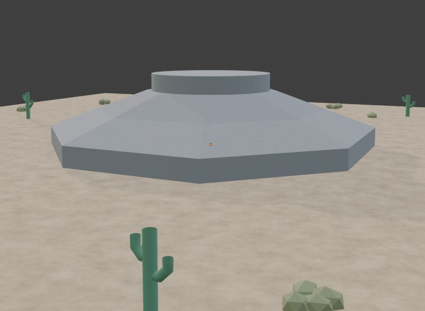
El IFC define la fundación y las vertidas. El voxelizador asigna cada celda a su vertida para resolver activación, conducción y fuente de calor. Primero la ubicación y los datos del IFC; después, la geometría continua y su voxelización.
Mantos de Hornillos / Ecos del Mar, Región de Coquimbo, Chile.
| Vertida | Dimensión envolvente | Volumen |
|---|---|---|
| 1V1 | 18 × 18 × 0,55 m | 147,626 m³ |
| 2V2 | 18 × 18 × 0,55 m | 147,626 m³ |
| 3V3 | 18 × 18 × 1,10 m | 214,224 m³ |
| 4V4 | 12,5 × 12,5 × 1,10 m | 88,925 m³ |
| 5V5 | 7 × 7 × 1,00 m | 38,375 m³ |
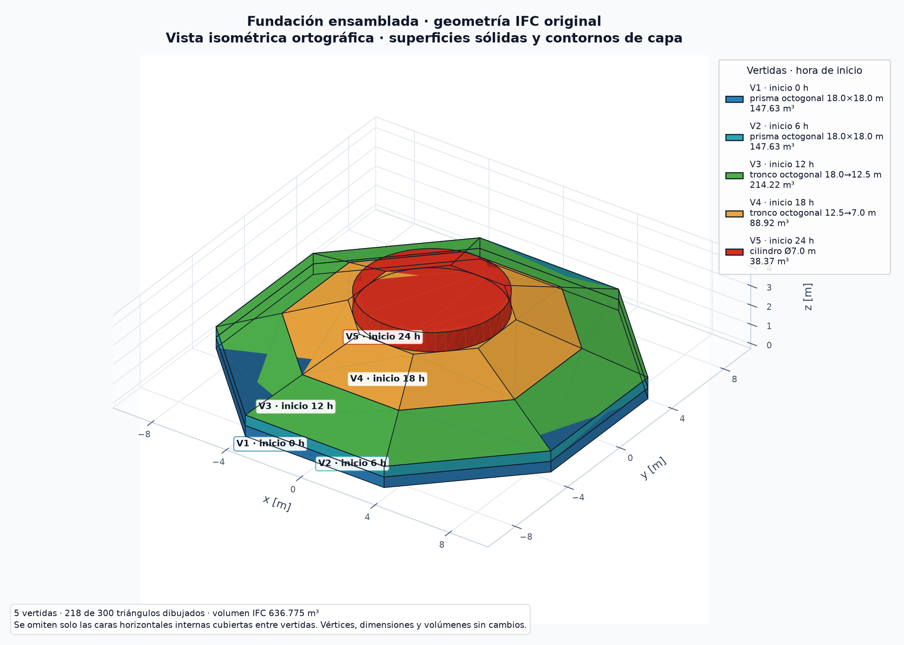

El IFC suma 636,776 m³. La malla de 0,25 m representa 633,38 m³ (−0,53 % en total), pero por vertida el error va de −9,8 % (V1 y V2) a +16,0 % (V3): las interfaces horizontales (alturas de 0,55, 1,10 y 2,20 m) no coinciden con la malla y cada voxel de interfaz se asigna a una sola vertida. El error por vertida no disminuye de forma monótona al refinar; el total sí queda dentro de ±1 % en todas las mallas mostradas.
| Vertida | Volumen IFC [m³] | Δx = Δy = Δz = 0,5 m | Δx = Δy = Δz = 0,25 m · usada | Δx = Δy = Δz = 0,125 m | Δx = Δy = Δz = 0,0625 m |
|---|---|---|---|---|---|
| V1 | 147,626 | 134,50 (−8,89 %) | 133,12 (−9,82 %) | 133,78 (−9,38 %) | 150,87 (+2,20 %) |
| V2 | 147,626 | 134,50 (−8,89 %) | 133,12 (−9,82 %) | 167,23 (+13,28 %) | 150,87 (+2,20 %) |
| V3 | 214,224 | 212,00 (−1,04 %) | 248,56 (+16,03 %) | 213,92 (−0,14 %) | 205,91 (−3,88 %) |
| V4 | 88,925 | 122,50 (+37,76 %) | 80,06 (−9,97 %) | 80,25 (−9,76 %) | 91,06 (+2,40 %) |
| V5 | 38,375 | 39,00 (+1,63 %) | 38,50 (+0,33 %) | 38,38 (0,00 %) | 38,34 (−0,08 %) |
| Total | 636,776 | 642,50 (+0,90 %) | 633,38 (−0,53 %) | 633,55 (−0,51 %) | 637,07 (+0,05 %) |
Mallas isótropas (tres tamaños iguales). Volumen voxelizado en m³ y, entre paréntesis, error relativo respecto del IFC. Columna resaltada: resolución usada en las simulaciones actuales.
Δx usado en las simulaciones: 0,25 m. Datos completos (más resoluciones y mallas anisótropas) en volumenes_convergencia_dx.csv e informe_tecnico_defensa.md.
El volumen y las dimensiones corresponden al IFC utilizado en la corrida. Los redondeos mostrados son de presentación; los CSV y el IFC conservan los valores de cálculo.
Conducción transitoria en 3D sobre una malla cartesiana. Cada vertida comienza a su hora programada, recibe su temperatura de colocación y genera calor según su curva de hidratación.
Calor que atraviesa la superficie del hormigón. Una sola convención para las tres tarjetas.
Relación convectiva en la superficie exterior en contacto con el aire; con protecciones, el solver incorpora sus resistencias. Taire procede de GEFS.
Resistencia equivalente hacia un fondo a 20 °C, sin almacenamiento térmico del suelo.
Las resistencias se suman y reducen el intercambio; al retirar una protección, se elimina su resistencia.
Se probaron ocho fuentes de hidratación y tres trayectorias GEFS. Los pesos se combinan de forma independiente para calcular Pf.

Las tres trayectorias se derivan del snapshot GEFS del 16 nov 2026 (ensamble de 31 miembros); no son miembros individuales. Su detalle de ponderación se documenta en la configuración y en el informe de la batería.
ws = peso del escenario s · I = indicador de incumplimiento (1 si falla, 0 si no) · MT = máxt Tmax(t).
El punto más caliente y la ubicación S25 más fría se vuelven a buscar en cada instante. La comparación abarca la estructura completa y no exige que ambos puntos sean vecinos.
Conserva los inicios y temperaturas de colocación del IFC. Se mantiene el moldaje configurado en V1, V2 y V5, sin manta térmica.
Mismo suelo, propiedades, hidratación, clima, malla y paso temporal; moldaje en V1, V2 y V5. Cambian la secuencia de activación y la temperatura de colocación. Resultados a 336 h (14 d) en 24 escenarios: 8 curvas × 3 climas.
| Variante | T colocación | Secuencia | Tmax máx [°C] (instante) | ΔT máx [°C] (instante) | Margen ΔT [°C] | ΔT > 20 °C | Pf |
|---|---|---|---|---|---|---|---|
| 1 · Original IFC | 18 °C | Inicios 0 / 6 / 12 / 18 / 24 h; fin estimado 24,384 h (D por capacidad de 100 m³/h) | 63,269 (192,5 h) | 45,886 (164 h) | −25,886 | 24 de 24 | 100 % |
| 2 · Simultáneo | 18 °C | Las cinco vertidas activadas en t = 0 (idealización térmica) | 63,271 (177,5 h) | 46,122 (164 h) | −26,122 | 24 de 24 | 100 % |
| 3 · Largo 24 h | 18 °C | Colocación continua distribuida por volumen durante 24 h (26,53 m³/h): inicios 0 / 5,56 / 11,13 / 19,20 / 22,55 h | 63,250 (194,0 h) | 45,846 (164 h) | −25,846 | 24 de 24 | 100 % |
| 4 · Original IFC a 10 °C | 10 °C | Misma secuencia que la variante 1: inicios 0 / 6 / 12 / 18 / 24 h | 55,921 (202,5 h) | 38,646 (164 h) | −18,646 | 24 de 24 | 100 % |
Tmax y ΔT son el máximo de los 24 escenarios de cada variante (no se mezclan en una curva). Margen = 20 − ΔT máx. El Pf de 100 % es la suma de pesos de los 24 escenarios fallidos (0,999999999999 con los pesos del archivo). Tmax no supera 70 °C en ninguna variante. Los picos de ΔT caen a las 164 h, dentro del horizonte de 336 h.
Elige una variante para ver sus figuras. Las vistas 3D usan los mismos escenario, tiempos y escala de color (17–64 °C, el rango real de los campos mostrados).
Secuencia del IFC: las cinco vertidas empiezan separadas 6 h; cada una se activa completa en su hora de inicio. Moldaje en V1, V2 y V5 (retiro 72 h tras colocar), sin manta. Peor ΔT: M4_SS / clima frío; peor Tmax: M4_SS / clima central.
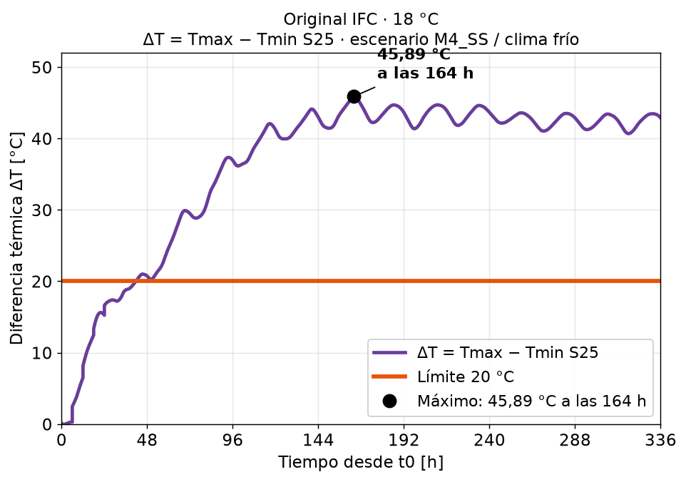
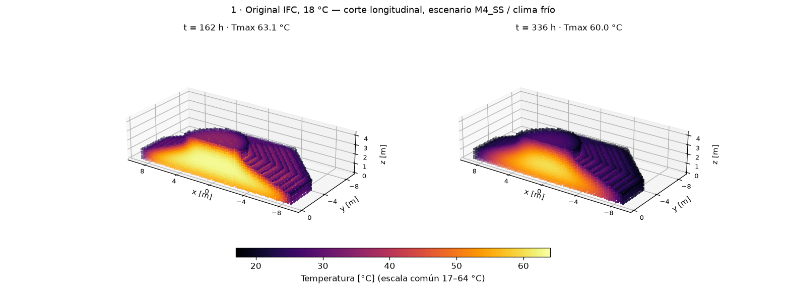
Activación simultánea en t = 0: es una idealización térmica del solver, no una colocación físicamente instantánea ni ejecutable. La duración por capacidad (636,776 m³ / 100 m³/h = 6,368 h) es solo una cota teórica. Moldaje igual que en el caso 1, retirado a las 72 h de t = 0. Peor ΔT: M4_SS / clima frío; peor Tmax: M4_SS / clima central.
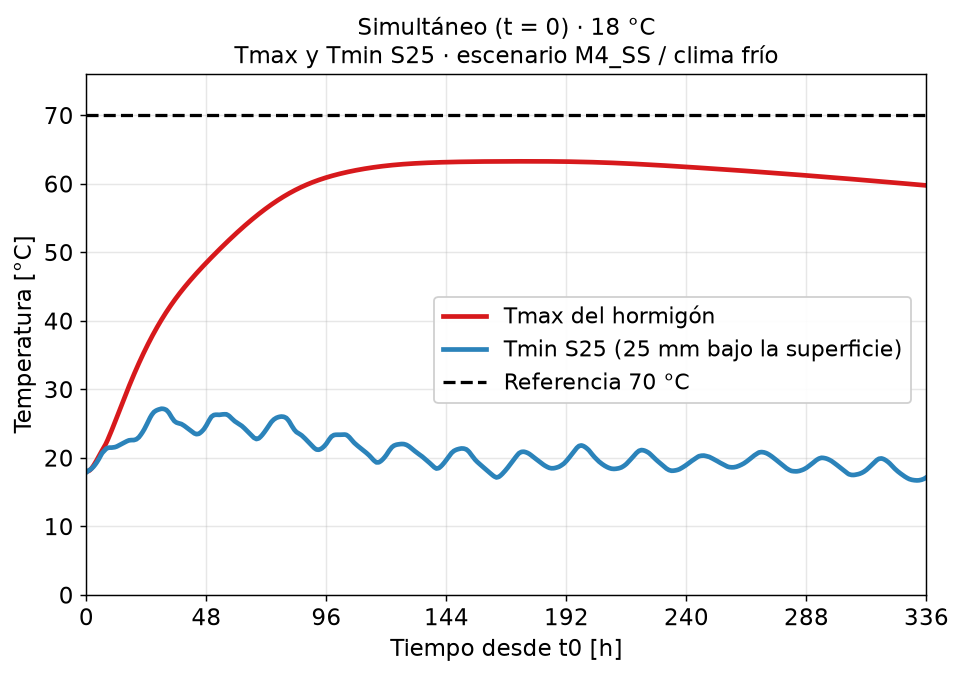
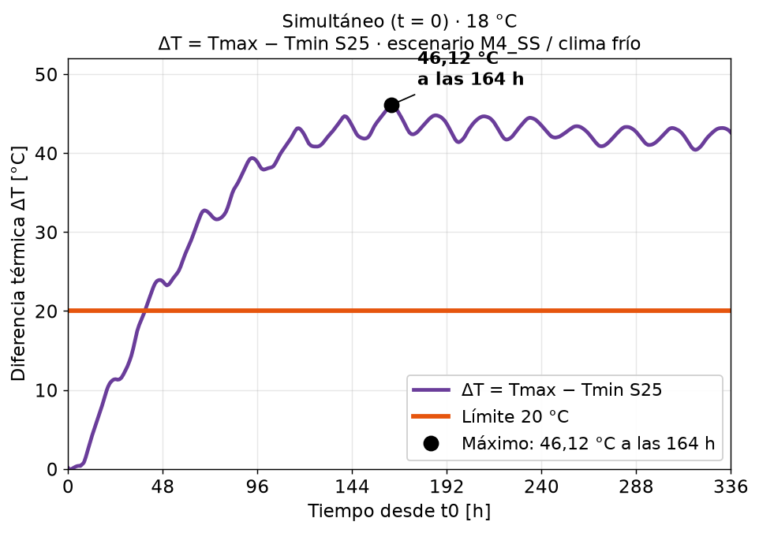
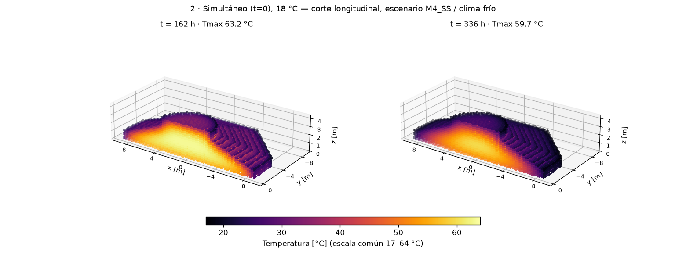
La colocación completa dura 24 h sin esperas, con caudal constante de 26,53 m³/h; cada vertida se activa completa en su hora de inicio. Moldaje en V1, V2 y V5 (72 h tras colocar), sin manta. Peor ΔT: M4_SS / clima frío; peor Tmax: M4_SS / clima central.
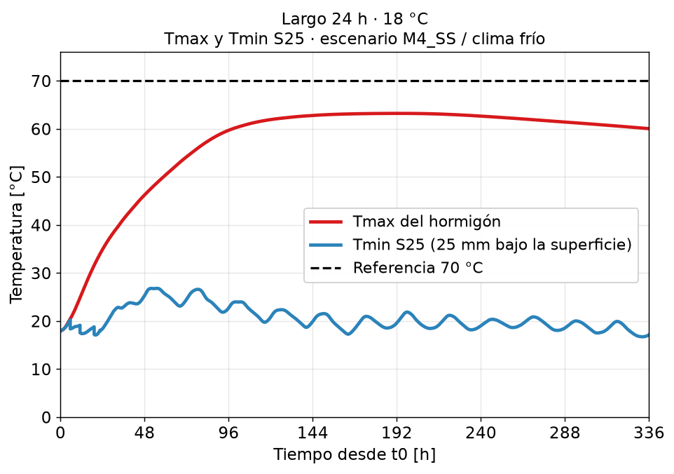
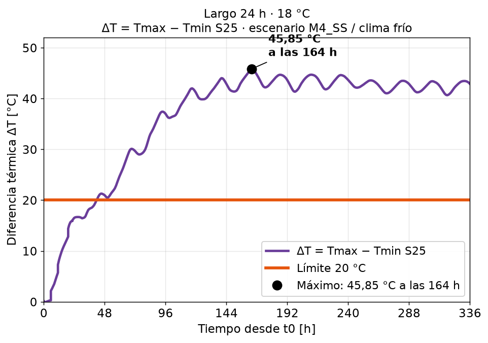
Idéntica a la variante 1 salvo la temperatura de colocación de las cinco vertidas (de 18 a 10 °C). Moldaje en V1, V2 y V5 (72 h tras colocar), sin manta. Peor ΔT: M4_SS / clima frío; peor Tmax: M4_SS / clima central.
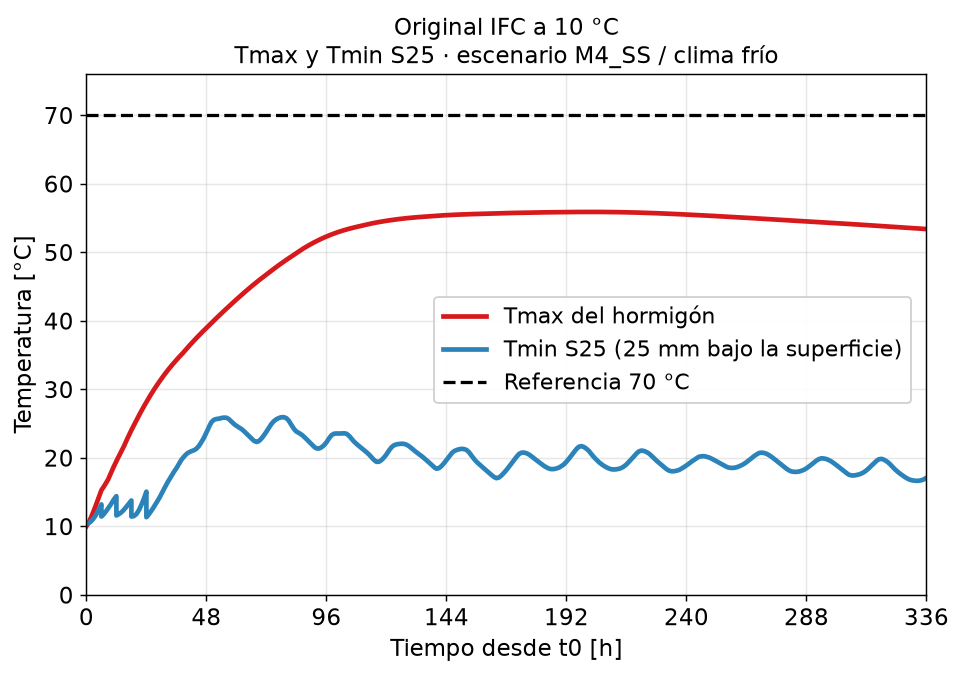
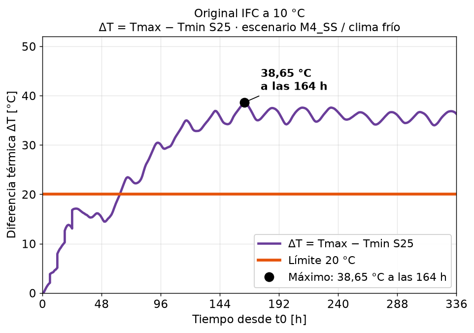
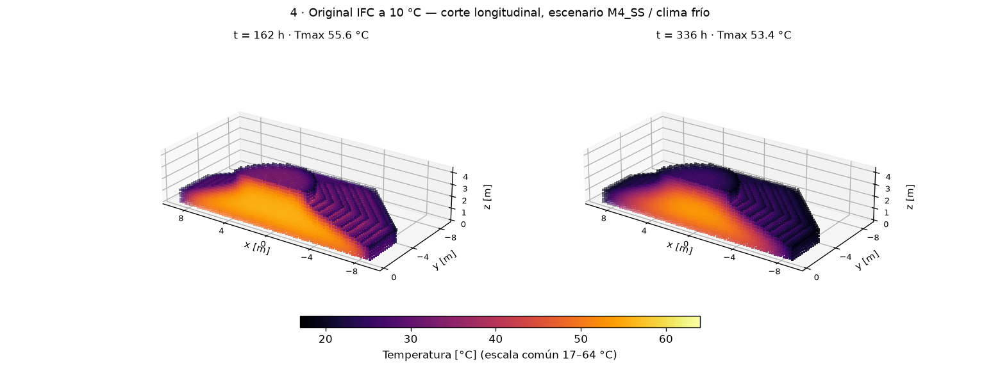
Cada gráfico usa un solo escenario identificado; la línea negra marca el límite de 20 °C.
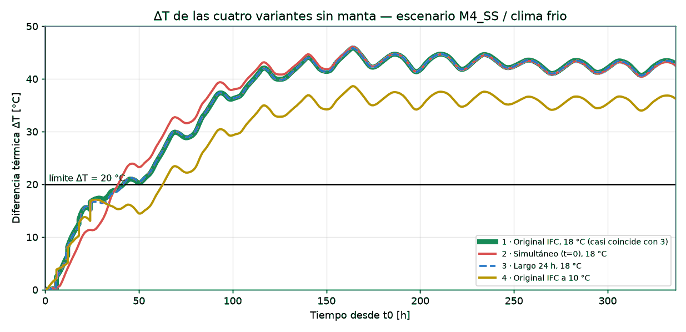
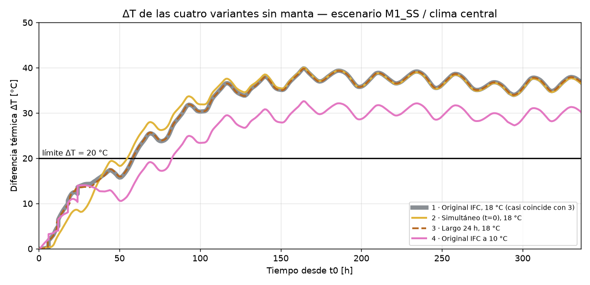
En las variantes sin manta evaluadas, cambiar la secuencia de activación o reducir la temperatura de colocación a 10 °C no fue suficiente para satisfacer el límite de ΔT. La secuencia produjo diferencias pequeñas entre los casos ensayados; reducir la temperatura sí mejoró el resultado, pero permaneció sobre 20 °C.
Tmax permanece bajo 70 °C. El incumplimiento viene de la diferencia térmica entre el máximo global y la mínima S25. El peor ΔT aparece con M4_SS / clima frío, a las 164 h.
| Vertida | Inicio IFC | Duración estimada | Fin estimado |
|---|---|---|---|
| V1 | 0 h | 1,476 h | 1,476 h |
| V2 | 6 h | 1,476 h | 7,476 h |
| V3 | 12 h | 2,142 h | 14,142 h |
| V4 | 18 h | 0,889 h | 18,889 h |
| V5 | 24 h | 0,384 h | 24,384 h |
La duración D = 24,384 h se estima dividiendo cada volumen por la capacidad de 100 m³/h. Temperatura de colocación IFC: 18 °C en las cinco vertidas.
Las curvas M1_SS / clima central muestran la evolución representativa. La decisión final se basa en la matriz completa, no solo en estas curvas.
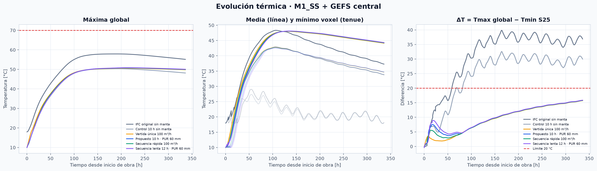
La matriz completa (11 casos × 24 escenarios, con las cuatro variantes de este tab) está en «Alternativas».
Las cuatro variantes sin manta superan 20 °C en los 24 escenarios (Pf = 100 %).
Sin manta, la secuencia IFC no satisface ΔT ≤ 20 °C en ningún escenario. El siguiente tab muestra el cambio bajo un programa y una temperatura de colocación definidos.
Se conserva el programa de 10 h acordado, se coloca el hormigón a 10 °C y se instala la manta cinco horas después de completar la secuencia.
Evaluación hasta 336 h; pico posterior y retiro no verificados.
| Vertida | Inicio | Duración | Fin |
|---|---|---|---|
| V1 | 0 h | 2 h | 2 h |
| V2 | 2 h | 2 h | 4 h |
| V3 | 4 h | 3 h | 7 h |
| V4 | 7 h | 2 h | 9 h |
| V5 | 9 h | 1 h | 10 h |
Manta PUR instalada a t = 15 h, 5 h después de terminar la colocación.
Caudales medios por vertida: V1 73,8; V2 73,8; V3 71,4; V4 44,5 y V5 38,4 m³/h. Todos quedan bajo la capacidad máxima de 100 m³/h por cuadrilla.
Mismo programa de 10 h, PUR 60 mm desde las 15 h, moldaje, suelo, hidratación, clima, malla y paso temporal; solo cambia la temperatura de colocación uniforme. 24 escenarios por temperatura, 336 h.
| T colocación | Tmax máx [°C] (escenario · instante) | Margen Tmax | ΔT máx [°C] | Margen ΔT | Excedencias de ΔT | Pf (Tmax) | Pf (ΔT) | Pf conjunta |
|---|---|---|---|---|---|---|---|---|
| 10 °C | 56,298 (M4_SS central · 214,0 h) | +13,702 | 18,964 (M4_SS frío · 336 h) | +1,036 | 0 de 24 | 0 % | 0 % | 0 % |
| 11 °C | 57,255 (M4_SS central · 213,3 h) | +12,745 | 19,511 (M4_SS frío · 336 h) | +0,489 | 0 de 24 | 0 % | 0 % | 0 % |
| 12 °C | 58,211 (M4_SS central · 212,8 h) | +11,789 | 20,059 (M4_SS frío · 336 h) | −0,059 | 1 de 24 | 0 % | 4,44 % | 4,44 % |
| 13 °C | 59,168 (M4_SS central · 212,3 h) | +10,832 | 20,607 (M4_SS frío · 336 h) | −0,607 | 3 de 24 | 0 % | 12,5 % | 12,5 % |
Pf conjunta = unión de escenarios fallidos con pesos exactos del archivo (curvas 1/8; climas 0,3548 / 0,3226 / 0,3226). El Tmax máximo y el ΔT máximo vienen de escenarios distintos (M4_SS central y M4_SS frío); no se combinan en una curva. Por cada grado adicional: Tmax +0,96 °C y ΔT +0,55 °C; el escenario crítico no cambia.
A 12 °C existe una excedencia individual (M4_SS / clima frío, ΔT = 20,059 °C), pero Pf = 4,44 % todavía satisface el criterio ≤ 5 %. A 13 °C, Pf = 12,5 % lo incumple. 12 °C es el primer valor ensayado con una excedencia; no es una temperatura límite exacta (solo se ensayaron 10, 11, 12 y 13 °C). La sensibilidad corresponde al modelo de hidratación usado: la fuente depende solo de la edad del hormigón, sin aceleración por mayor temperatura.
Selecciona una temperatura para ver sus curvas y sus cortes 3D con escala común.
Plan 1 original: cumple en los 24 escenarios; margen de ΔT 1,036 °C. Tmax y ΔT máximos pertenecen a escenarios distintos y se muestran por separado.
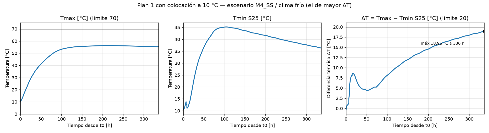
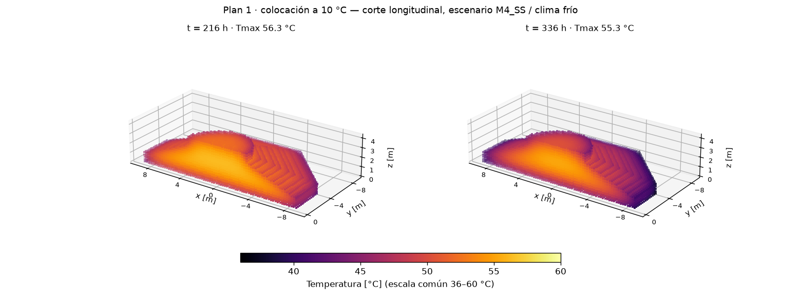
Cumple en los 24 escenarios; el margen de ΔT baja a 0,489 °C. Tmax y ΔT máximos pertenecen a escenarios distintos y se muestran por separado.
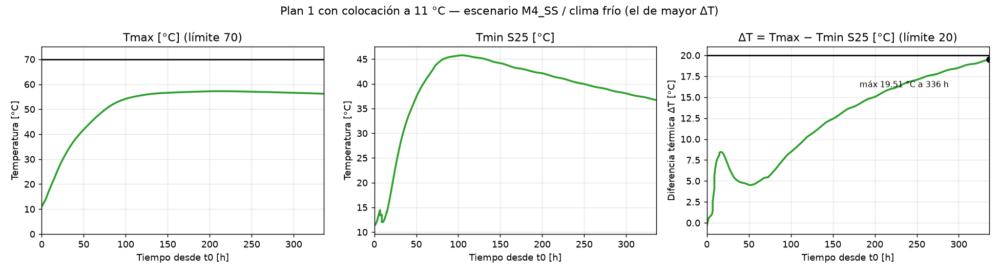
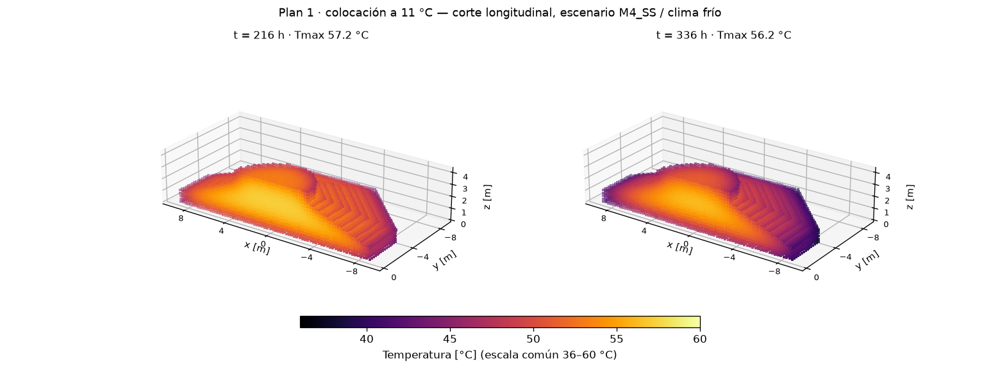
Existe una excedencia individual: M4_SS / clima frío llega a 20,059 °C (0,059 °C sobre el límite). Aun así Pf = 4,44 % (el peso de ese único escenario) y todavía satisface el criterio Pf ≤ 5 %. Tmax y ΔT máximos pertenecen a escenarios distintos y se muestran por separado.
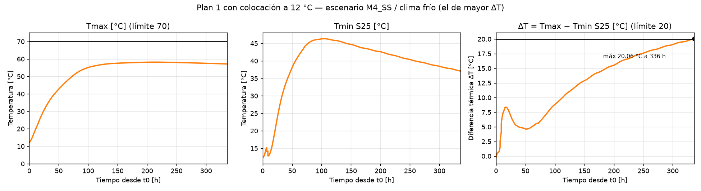
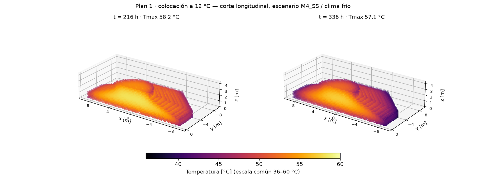
Tres escenarios superan 20 °C (M4_SS frío 20,607; M4_SS central 20,362; M4_SS cálido 20,125 °C): Pf = 12,5 %, que incumple el criterio Pf ≤ 5 %. Tmax y ΔT máximos pertenecen a escenarios distintos y se muestran por separado.
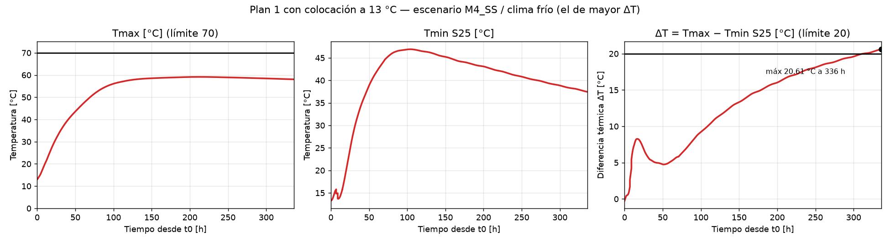
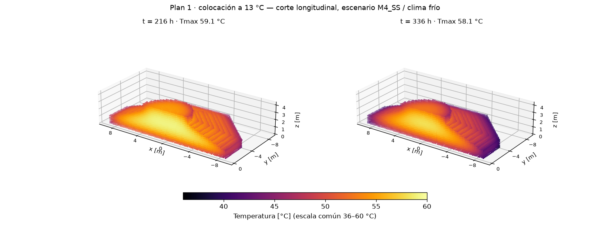
Cada figura usa un solo escenario identificado; las líneas negras marcan los límites de 70 °C y 20 °C.
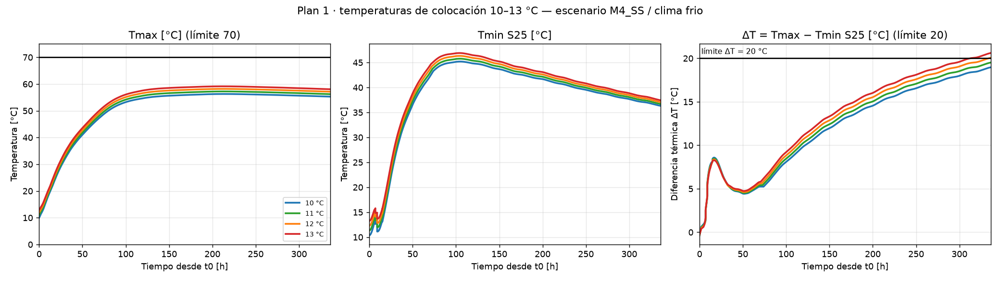
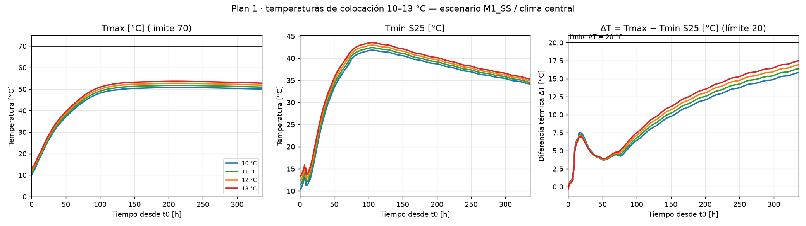
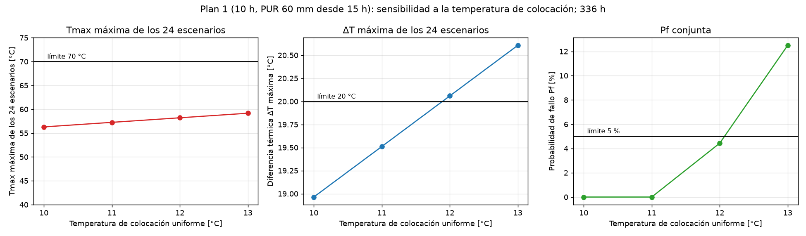
Cortes horizontales de la corrida del plan 1. Se conserva la misma escala de color para comparar días distintos.
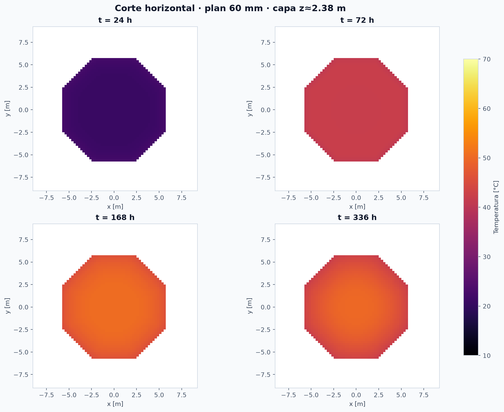
La evaluación del plan usa 24 combinaciones ponderadas. El CSV histórico es del dossier original de 6 planes; la batería actual (11 casos, 264 combinaciones evaluadas) está en el segundo enlace.
El peor ΔT queda 1,036 °C bajo el umbral y ocurre a las 336 h, el último instante simulado. El dossier demuestra cumplimiento hasta 14 días; no proyecta el comportamiento posterior.
Se fijó 100 m³/h como capacidad máxima por cuadrilla. Se comparan duración y cumplimiento térmico, manteniendo materiales, clima y límites de evaluación.
11 casos × 24 escenarios (8 curvas de hidratación × 3 climas) = 264 combinaciones evaluadas: 168 calculadas en esta batería y 96 reutilizadas del dossier original (casos 1, 4, 5 y 7, comprobadas con recálculos de control). Cada celda es el máximo temporal de ΔT = Tmax − Tmin S25 del caso y escenario durante las 336 h.
| Clima frío | Clima central | Clima cálido | Resumen del caso | ||||||||||||||||||||||||
|---|---|---|---|---|---|---|---|---|---|---|---|---|---|---|---|---|---|---|---|---|---|---|---|---|---|---|---|
| Caso | M1_SS | M2_SS | M3_SS | M4_SS | M1_22A | M2_22A | M3_22A | M4_22A | M1_SS | M2_SS | M3_SS | M4_SS | M1_22A | M2_22A | M3_22A | M4_22A | M1_SS | M2_SS | M3_SS | M4_SS | M1_22A | M2_22A | M3_22A | M4_22A | ΔT máx | Exced. | Pf |
| 1 · Base original IFC, 18 °C | 40,8× | 44,5× | 43,4× | 45,9× | 29,9× | 39,2× | 35,2× | 35,4× | 39,8× | 43,5× | 42,5× | 44,9× | 28,9× | 38,3× | 34,2× | 34,4× | 38,9× | 42,5× | 41,6× | 44,1× | 27,6× | 37,0× | 32,9× | 33,1× | 45,89 | 24 / 24 | 100 % |
| 2 · Base simultáneo, 18 °C | 41,0× | 44,6× | 43,7× | 46,1× | 29,9× | 39,2× | 35,2× | 35,3× | 40,0× | 43,6× | 42,7× | 45,1× | 28,9× | 38,2× | 34,2× | 34,3× | 39,0× | 42,5× | 41,7× | 44,2× | 27,6× | 36,8× | 32,8× | 32,9× | 46,12 | 24 / 24 | 100 % |
| 3 · Base largo 24 h, 18 °C | 40,8× | 44,4× | 43,4× | 45,8× | 29,9× | 39,2× | 35,2× | 35,3× | 39,8× | 43,4× | 42,4× | 44,9× | 28,9× | 38,3× | 34,2× | 34,4× | 38,9× | 42,5× | 41,6× | 44,1× | 27,6× | 36,9× | 32,9× | 33,1× | 45,85 | 24 / 24 | 100 % |
| 11 · Base original IFC a 10 °C | 33,6× | 37,2× | 36,2× | 38,6× | 22,6× | 32,0× | 28,0× | 28,1× | 32,6× | 36,2× | 35,2× | 37,7× | 21,7× | 31,0× | 27,0× | 27,2× | 31,7× | 35,3× | 34,4× | 36,9× | 20,4× | 29,8× | 25,7× | 25,9× | 38,65 | 24 / 24 | 100 % |
| 7 · Control: 10 h sin manta, 10 °C | 33,6× | 37,2× | 36,2× | 38,7× | 22,5× | 31,8× | 27,8× | 27,9× | 32,6× | 36,2× | 35,2× | 37,7× | 21,5× | 30,8× | 26,8× | 27,0× | 31,6× | 35,2× | 34,3× | 36,8× | 20,2× | 29,5× | 25,5× | 25,6× | 38,66 | 24 / 24 | 100 % |
| 4 · Plan 1: 10 h, PUR 60 mm, 10 °C | 16,1 | 17,9 | 17,6 | 19,0 | 9,9 | 15,0 | 12,8 | 12,9 | 15,8 | 17,7 | 17,3 | 18,7 | 9,6 | 14,7 | 12,6 | 12,6 | 15,6 | 17,5 | 17,1 | 18,5 | 9,4 | 14,5 | 12,3 | 12,4 | 18,96 | 0 / 24 | 0 % |
| 5 · Plan simultáneo, PUR 60 mm, 10 °C | 16,0 | 17,8 | 17,4 | 18,8 | 9,8 | 14,9 | 12,7 | 12,8 | 15,7 | 17,6 | 17,2 | 18,6 | 9,6 | 14,6 | 12,5 | 12,6 | 15,5 | 17,3 | 17,0 | 18,4 | 9,3 | 14,4 | 12,2 | 12,3 | 18,83 | 0 / 24 | 0 % |
| 6 · Plan largo 24 h, PUR 60 mm, 10 °C | 16,3 | 18,2 | 17,9 | 19,3 | 14,2 | 18,5 | 17,4 | 17,4 | 16,0 | 17,9 | 17,6 | 19,0 | 14,2 | 18,4 | 17,3 | 17,3 | 15,8 | 17,7 | 17,4 | 18,8 | 14,2 | 18,5 | 17,4 | 17,4 | 19,27 | 0 / 24 | 0 % |
| 8 · Plan 1 a 11 °C | 16,6 | 18,5 | 18,1 | 19,5 | 10,4 | 15,5 | 13,3 | 13,4 | 16,4 | 18,2 | 17,9 | 19,3 | 10,2 | 15,3 | 13,1 | 13,2 | 16,1 | 18,0 | 17,6 | 19,0 | 9,9 | 15,0 | 12,9 | 13,0 | 19,51 | 0 / 24 | 0 % |
| 9 · Plan 1 a 12 °C | 17,2 | 19,0 | 18,7 | 20,1× | 11,0 | 16,1 | 13,9 | 14,0 | 16,9 | 18,8 | 18,4 | 19,8 | 10,7 | 15,8 | 13,6 | 13,7 | 16,7 | 18,6 | 18,2 | 19,6 | 10,5 | 15,6 | 13,4 | 13,5 | 20,06 | 1 / 24 | 4,44 % |
| 10 · Plan 1 a 13 °C | 17,7 | 19,6 | 19,2 | 20,6× | 11,5 | 16,6 | 14,4 | 14,5 | 17,5 | 19,3 | 19,0 | 20,4× | 11,3 | 16,4 | 14,2 | 14,3 | 17,2 | 19,1 | 18,7 | 20,1× | 11,0 | 16,1 | 14,0 | 14,0 | 20,61 | 3 / 24 | 12,50 % |
Tres formas de colocar con la misma protección: activación simultánea idealizada, programa original de 10 h y colocación larga de 24 h. Suelo 2 m, 24 escenarios, 336 h.
| Alternativa | Duración constructiva | Activación térmica | Instalación de la manta | Tmax máx [°C] | ΔT máx [°C] | Margen ΔT | Pf |
|---|---|---|---|---|---|---|---|
| Activación simultánea idealizada | no definida (cota por capacidad 6,368 h; no ejecutable) | Las cinco vertidas activas en t = 0 | 11,368 h (D de capacidad + 5 h) | 56,115 (M4_SS central · 208,7 h) | 18,834 (M4_SS frío · 336 h) | +1,166 | 0 % |
| Programa original de 10 h | 10,000 h | Inicios 0 / 2 / 4 / 7 / 9 h | 15,0 h (D + 5 h) | 56,298 (M4_SS central · 214,0 h) | 18,964 (M4_SS frío · 336 h) | +1,036 | 0 % |
| Colocación larga de 24 h | 24,000 h | Inicios 0 / 5,56 / 11,13 / 19,20 / 22,55 h | 29,0 h (D + 5 h) | 56,571 (M4_SS central · 223,8 h) | 19,270 (M4_SS frío · 336 h) | +0,730 | 0 % |
Las tres cumplen en los 24 escenarios con ΔT máximo a las 336 h. La activación simultánea es una idealización térmica y no equivale a una duración constructiva de cero horas. Tmax y ΔT máximos vienen de escenarios distintos y no se mezclan en una curva. Las diferencias entre las tres son menores a 0,5 °C en ΔT.
Evaluación hasta 336 h; pico posterior y retiro no verificados.
Elige una alternativa; las curvas usan el mismo escenario y el mismo eje de tiempo.
Idealización térmica: el solver activa todo el volumen en t = 0. No es una colocación físicamente instantánea ni una duración constructiva de 0 h. La cota 6,368 h = 636,776 m³ / 100 m³/h solo fija el instante de instalación de la manta. Manta instalada a las 11,368 h (D de capacidad + 5 h). Tmax y ΔT máximos pertenecen a escenarios distintos y se muestran por separado.
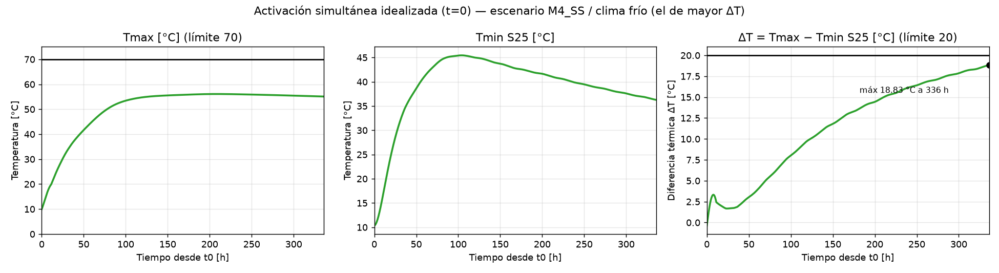
Plan 1 del compañero: una cuadrilla, caudales medios de 38 a 74 m³/h por vertida, cada vertida activada completa en su hora de inicio. Manta instalada a las 15,0 h (D + 5 h). Tmax y ΔT máximos pertenecen a escenarios distintos y se muestran por separado.
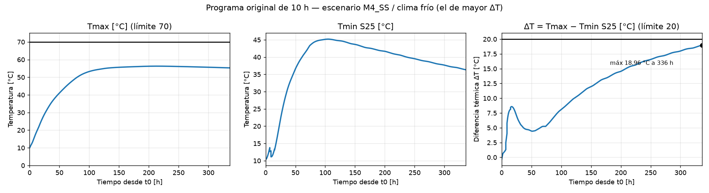
Colocación continua distribuida por volumen a 26,53 m³/h, sin esperas; cada vertida activada completa en su hora de inicio. Es la de menor margen de las tres. Manta instalada a las 29,0 h (D + 5 h). Tmax y ΔT máximos pertenecen a escenarios distintos y se muestran por separado.
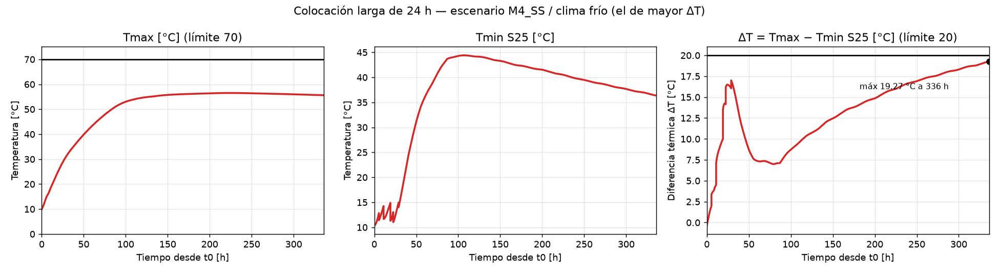
Un solo escenario identificado por figura; línea negra = límite de 20 °C.
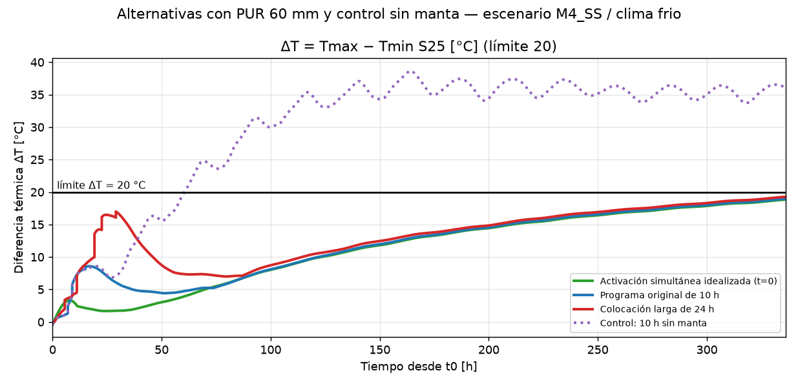
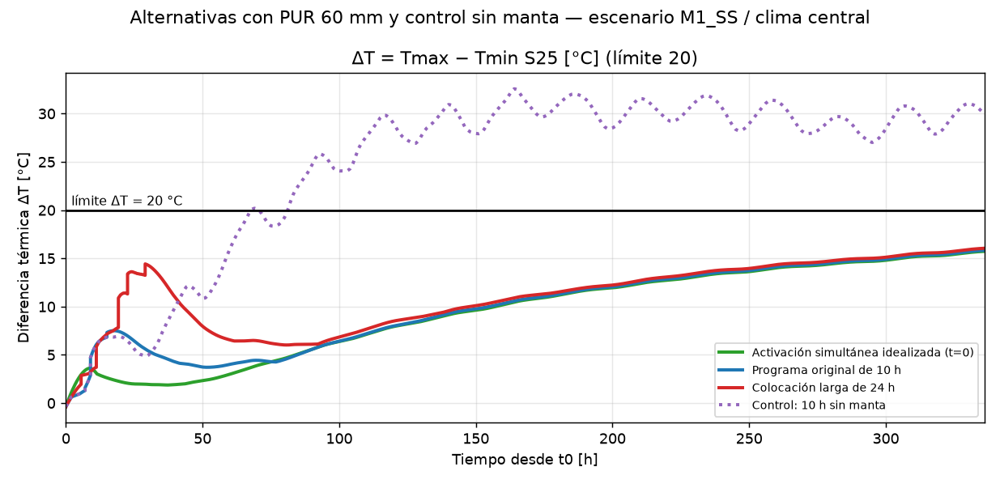
Mismo programa de 10 h, misma temperatura de colocación (10 °C) y mismo moldaje; solo se retira la manta PUR de 60 mm.
La manta reduce el ΔT máximo en 19,70 °C (entre 10,80 y 19,70 °C según el escenario) y casi no cambia Tmax (+0,56 °C): no enfría el hormigón, reduce el gradiente con la superficie.
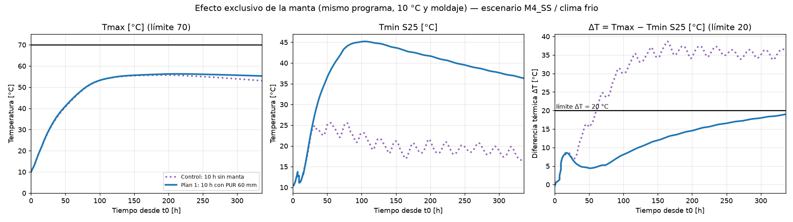
Resumen de los 11 casos de la batería (24 escenarios por caso, 336 h). Tmax y ΔT son máximos sobre los 24 escenarios y pueden corresponder a escenarios distintos; Pf es la probabilidad conjunta (suma de pesos de los escenarios que fallan).
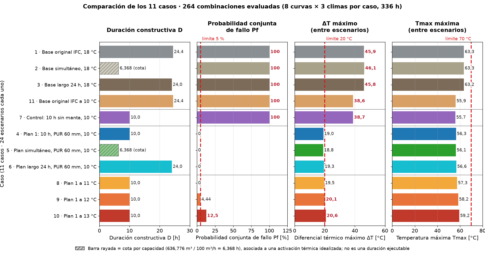